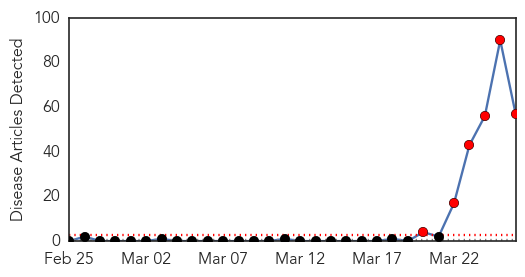
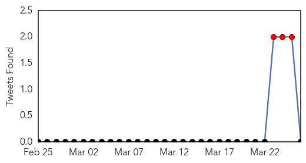
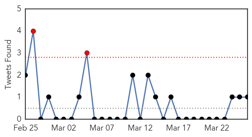
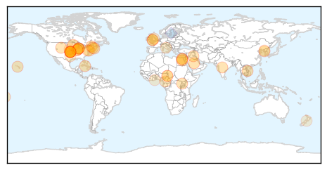

Ebola
30-Day Web Trend
6 alerts, 0 warnings

30-Day Twitter Trend
4 alerts, 0 warnings

Article Locations

Article Confidences

Top Articles:
- 1.000
- Ebola outbreak in Guinea may spread to Liberia
- 1.000
- Guinea says has contained Ebola outbreak, death toll rises
- 1.000
- Ebola outbreak in Guinea may spread to Liberia
- 1.000
- African nations scrambling to contain Ebola
- 1.000
- UPDATE 1-Guinea says has contained Ebola outbreak, death toll rises
- 1.000
- Guinea says has contained Ebola outbreak, death toll rises
- 1.000
- Bat meals banned in ebola battle
- 1.000
- What If Ebola Came to North America?
- 1.000
- Officials: At least 60 dead in Ebola outbreak in Guinea
- 1.000
- Guinea Ebola death toll rises to 63
- 1.000
- Canadian man tests negative for Ebola amid outbreak fears
- 1.000
- Liberia probes Ebola-like cases - Africa
- 1.000
- Vacations, Vaccines And Very Expensive Monkeys
- 1.000
- West Africa Battles to Stop the Disease from Reaching Epidemic Proportions
- 1.000
- World Health Organization Rules Out ‘Ebola-like Symptoms’ in Canada, Disease a Threat to National Security
- 1.000
- Threat of Ebola outbreak in West Africa
- 1.000
- Curbing West Africa's Ebola outbreak
- 1.000
- West Africa on high alert as medics battle the Ebola virus
- 1.000
- West Africa on high alert as medics battle the Ebola virus
- 1.000
- West Africa on high alert as medics battle the Ebola virus
- 1.000
- MSF: ′We don′t know why Ebola happens′
- 1.000
- Ghana MPs issue ebola alert!
- 1.000
- Guinea Ebola outbreak: Bat-eating banned to curb virus
- 1.000
- Guinea's Ebola outbreak leads to testing in Liberia
- 1.000
- Guinea Ebola Outbreak: Bat-Eating Banned To Curb Virus
- 1.000
- Ebola believed to have spread to Liberia
- 1.000
- Panic in West Africa after Ebola outbreak in Guinea
- 1.000
- Curbing West Africa’s Ebola outbreak
- 1.000
- The Voice of Russia: News, Breaking news, Politics, Economics, Business, Russia, International current events, Expert opinion, podcasts, Video
- 1.000
- Health officials deal with Ebola outbreak
- 1.000
- Ebola victims quarantined in Guinea
- 1.000
- Ebola in Guinea: MSF Reinforces Teams to Help Control Spread of Epidemic - Guinea
- 1.000
- Curbing West Africa’s Ebola outbreak - Guinea
- 1.000
- Guinea says has contained Ebola outbreak, death toll rises
- 1.000
- W Africa scrambles to prevent Ebola spread
- 1.000
- New Ebola outbreak raising fears
- 0.999
- Ebola: Three deaths in Liberia
- 0.999
- Threatwatch: Will deadly Ebola become more contagious?
- 0.999
- Bat-eating ban enacted in Guinea to halt spread of Ebola virus
- 0.999
- Guinea’s Ebola outbreak: ‘There are far worse diseases out there’
- 0.998
- Ivory Coast on alert for Ebola virus
- 0.998
- Guinea bans sale and consumption of bats to prevent spread of Ebola
- 0.998
- Deadly Ebola outbreak in Guinea causes fear as death toll climbs.
- 0.998
- First Ebola hemorrhagic fever outbreak reported in Guinea
- 0.998
- Sierra Leone Well Prepared to Fight any Ebola Outbreak
- 0.996
- Nigeria holds consultations over Ebola outbreak in neighbouring Guinea
- 0.996
- Spectacular virus kills the poor and vulnerable
- 0.991
- Guinea Ebola Outbreak Claims the Lives of 63 People
- 0.988
- The Sources And Symptoms Of A Disease With A Global Reputation
- 0.985
- Guinea Ebola epidemic threatening to become a regional crisis
Showing top 50 articles...
Top Tweets:
- 0.595
- Update on Guinean ebola outbreak; Volunteers and response to the WA landslide. HealthSecurity http://t.co/JWXBy2z7Nh
Unknown
30-Day Web Trend
0 alerts, 0 warnings

30-Day Twitter Trend
1 alerts, 1 warnings

Article Locations
Article Confidences

Top Articles:
- 0.917
- 24hr news, 7 days a week across the Isle of Wight
- 0.917
- Chicago Tribune
- 0.917
- Chicago Tribune
- 0.917
- Chicago Tribune
- 0.917
- Chicago Tribune
- 0.917
- Chicago Tribune
- 0.917
- Chicago Tribune
- 0.917
- Chicago Tribune
- 0.917
- Chicago Tribune
- 0.917
- Chicago Tribune
- 0.910
- The world windows to Thailand
- 0.878
- Hospital-Related Infections Hit Nearly 650,000 Patients in 2011: CDC
- 0.871
- Map: TB’s Global Reach
- 0.866
- 1 in 25 hospital patients get an infection
- 0.866
- A transport truck driver walks through blowing snow at a truck stop during a major storm in Enfield Nova Scotia
- 0.866
- U.S. Coast Guard members lower the hurricane warning flags to downgrade the alert to storm warning at their station in Chatham
- 0.866
- Two firefighters hurt in blaze in historic Boston neighborhood
- 0.866
- Egypt orders 919 Brotherhood members to stand trial
- 0.866
- Children from Bunia in eastern Democratic Republic of Congo push a bicycle within the Kyangwali refugee settlement in Hoima district in Western Uganda
- 0.858
- Displacement, violence likely cause of Iraq’s first polio case in 14 years
- 0.855
- International Respiratory Societies to assist in finding the 3 million “missed” TB cases
- 0.846
- Fewer People Are Getting Infections In Hospitals, But Many Still Die
- 0.846
- Fewer People Are Getting Infections In Hospitals, But Many Still Die
- 0.846
- Fewer People Are Getting Infections In Hospitals, But Many Still Die
- 0.845
- Fewer People Are Getting Infections In Hospitals, But Many Still Die : Shots
- 0.841
- Letterlijk: Obama's scherpe slottoespraak in Bozar
- 0.780
- CDC Director: Hospital infections down but still deadly, dangerous
- 0.766
- Hospital infections less common, new report says
- 0.737
- Inter-Korea/News/News/KBS World Radio
- 0.725
- DoH issues “pink eye” health alert; cautions parents to keep sick children at home
- 0.723
- Regional insecurity fuels polio in Cameroon - Cameroon
- 0.722
- Regional insecurity fuels polio in Cameroon
- 0.699
- 1 in 25 patients gets infection in hospital
- 0.693
- Regional insecurity fuels polio in Cameroon
- 0.668
- One in 25 patients battling hospital-acquired infections: CDC
- 0.666
- Public health budgets ‘raided’ to pay for council cuts
- 0.638
- Councils diverting public health cash, says journal
- 0.625
- Hospitals seek infection antidote
- 0.619
- East Texas teen welcomed home after hospitalization from flu
- 0.593
- Virus spreads in Nebraska hog herds, along with worry
- 0.581
- How Can To Deal With Drug-Resistant Tuberculosis
- 0.570
- Foot and mouth disease spreads to cattle in North Korea
- 0.525
- Tuberculosis is affecting mostly young adults
- 0.507
- New IT system improves patient healthcare
Top Tweets:
- 0.688
- lo más rico que se escucha es el "pajalo" en vez de "pajaro" awnnn te amo Maya'
- 0.667
- RT: Globally, from Sept 2012 to date, WHO has been informed of 206 lab-confirmed Middle East respiratory syndrome cases, incl 86 deaths